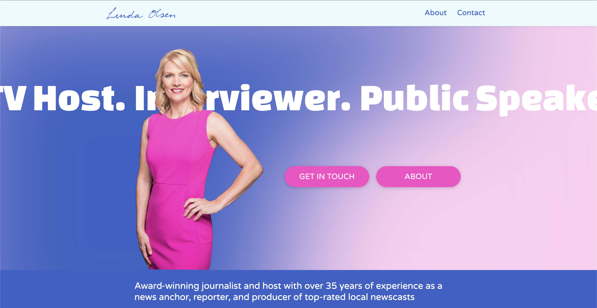

Personal Brand Website for a Media Professional in Career Transition
Designing and developing a personal brand website for a seasoned media professional transitioning into new career opportunities, showcasing decades of broadcast journalism experience.
 Webflow
Webflow
 JavaScript
JavaScript
 HTML5
HTML5
 CSS3
CSS3
Project Overview
The Challenge
Create a professional, personal brand website for a media professional with over 30 years of broadcast journalism experience who was transitioning into new career opportunities including speaking engagements, consulting, and media training.
The client needed a digital presence that would convey her experience and establish credibility and also serve as an ingestion point for any potential engagements and professional opportunites.
Goal
The goal was to create something lightweight—avoiding superfluous information that could overwhelm potential clients. Short, succinct phrasing conveys the value Linda brings to potential engagements, while intuitive navigation makes it easy for prospects to reach out directly. I was given the green light to add motion and visual interest, allowing the site to stand out from a standard static "brochureware" website.
The Final Product
The completed website serves as a digital hub for the client's personal brand, effectively communicating her expertise and making it easy for potential clients to learn about her services and get in touch. The client is able to update the content herself, and the website is mobile-optimized.
I am thrilled with the website Parker created to help promote my new media consulting business! He came in full of creative ideas and worked with me to get the right feel and look for the site which highlights my experience in a dynamic way. I have already had clients reach out for work opportunities!